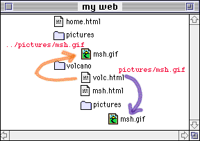

8a. Linking to Local Files
Can my document talk to my document? Well, they can at least be linked!
Objectives
After this lesson, you will be able to:
- Create a link to an HTML document in the same directory/folder as your main document.
- Create a link to display a graphic image.
- Create a link to a file in a different directory/folder than your main document.
- Reorganize the structure of your web.
Lesson
Now, you will take your first step of "anchoring" by creating a hypertext link
to a second web page. These links are called "local" because they reside on the same computer as the working document (they do not have to venture out on the Internet). You will also be shuffling around the parts of your growing web site (do you see how this becomes more than just a "home page"?).
Note: If you do not have the working document from the previous
lesson, download a copy now.
Link to Local Files
The simplest anchor link is one that opens another HTML file in the same directory as the presently displayed web page. The
HTML format for doing this is:
<a href="filename.html">text that responds to link</a>
Think of it as "a" for anchor link and "href" for "hypertext reference".
The filename must be another HTML file. Whatever text occurs after the first > and before the closing </a> symbols will be the
"hypertext" that appears underlined and "hyper."
Now follow these steps to build an anchor link in your HTML document to a
local file:
- Open your HTML document, volc.html, in the text editor.
- First, under the Volcanic Places in the USA heading,
enter the following text which introduces the two volcanoes discussed
in later sections.
Listed below are two places in the United States that are
considered "active" volcanic areas.
- Below the "Mount St. Helens" heading, enter:
On May 18, 1980, after a long period of rest, this quiet
mountain in Washington provided <a href="msh.html">
detailed observations</a> on the mechanics
of highly explosive eruptions.
The text "detailed observations" will link the viewer
to a second HTML document called msh.html. This second HTML file does not yet
exist; we will construct it in steps (5) and (6).
- Save and close your HTML document
- Now, with your text editor, open a window for a New
document.
- Enter the following text in the new window:
<html>
<head>
<title>Mount St Helens</title>
</head>
<body>
<h1>Mount St Helens</h1>
The towering pine trees of this once-quiet mountain
were toppled over like toothpicks.
</body>
</html>
- Save this file as msh.html in the same
directory/folder as your working HTML file (volc.html).
- Reload volc.html in your web browser.
- Test the hypertext link for the words "detailed observations". When selected, it
should connect you to the new page about Mount St. Helens.
Anchor Link to a Graphic
In lesson 7a, we learned how to display an
"inline" graphic that would appear in your web page. With the anchor tag, you can also create a link to display a graphic file.
When the anchor link is selected, it will download the image file and display the image by itself in your web browser.
NOTE: Most web browsers will display such a link to an image file directly in your web browser. Depending on the web browser, and the preferences/settings on your computer, you may be promoted to either save the file or to select an application to display the file. Regardless of the action, if you get that far, the link to the image file has succeeded.
The simplest anchor link is to a file in the same directory/folder
as the document that calls it. The format for creating a hypertext
link to a graphic is the same as above for linking to another HTML
document:
<a href="filename.gif">text that responds to link</a>
where filename.gif is the name of a GIF image file.
Now follow these steps to add a link to a graphic file in your HTML
document:
- Download a copy of a GIF image from the Lesson 8a Image Studio.
- Open the msh.html file in the text editor.
- Modify the text to include a link to the image of Mount St. Helens.
The towering pine trees of this once-quiet mountain
were <a href="msh.gif">toppled over like toothpicks</a>.
- Save the msh.html file and Reload in
your web browser
- Now click on the link you just created in step (3).
- A picture of blown down trees should be displayed.
Links to other directories
The anchor tags can also link to an HTML document or graphic file in another directory/folder in relation to the document that contains the anchor. For example, in our lesson, we may wish to keep all of the graphics in a separate directory/folder called pictures. As you create more and more HTML files, keeping the image files in its own area will make things a bit more organized for you. Let's do that now:
- From your computer system, create a sub-directory/folder called
pictures in the same location where your
volc.html file is stored.
- Move the msh.gif file to this new
sub-directory/folder.
- Open the msh.html file in your text editor.
- Edit the anchor tag for the graphic to read:
The towering pine trees of this once-quiet mountain
were <a href="pictures/msh.gif">toppled over
like toothpicks</a>.
NOTE: With HTML you can direct your web browser to open any
document/graphic at a directory level lower (i.e. a sub-directory or folder within the directory/folder that contains the working HTML file) by using the "/" character to indicate the change to a sub-directory called "pictures."
 work area
work area
 volc.html
volc.html
pictures
- Save the HTML document and Reload in your web browser.
If all went well, the link in the sentence describing the blown-down
trees should now call up the graphic file stored in the
pictures sub-directory/folder.
Anchor Links to a Higher Level Directory
The types of links we have constructed here are known as "relative" links, meaning a web browser can construct the full URL based upon the current location of the HTML page and the link information in the <a href=...> tags. This is very powerful because you can build all your web pages on one computer, test them, and move them to another computer -- all the relative links will stay intact.
In this lesson we saw how to construct a hyperlink to a document that is stored in a directory lower than the working HTML page. Note that you can also construct a link that connects to a higher level directory as well by using this HTML:
<a href="../../home.html">return to home</a>
Each instance of "../" the URL of an anchor link tells the web browser to go to a higher level directory/folder relative to the current page; in this case to go up two directory/folder levels and look for a file called home.html.
In our example, let's say that our pictures sub directory was not in the same directory/folder as the volc.html file but was actually one level higher.

In the previous section we constructed a link from the volc.html file to the msh.gif file in a subdirectory:
<img src="pictures/msh.gif">
Now, we want to reorganize our web structure so that the pictures folder/directory is at a higher level. The link is now written:
<img src="../pictures/msh.gif">
so the web browser looks for a folder called "pictures" that is stored one level up from our volc.html file.
An advantage of this structure is that it would be easier to store a large number of graphics in this upper folder/directory that can be shared in other web pages. We may do another lesson on landforms that makes use of the pictures stored in this folder/directory.
So now it is time to do a little re-organizing of our HTML files. This requires that you are familiar with moving files and directories around on your computer.
Read this carefully! It may be feeling like it's getting complicated, but it will all be clear soon!
- First, create a new folder/directory and name it volcano
(it is recommended to keep the file names in all lower case).
- Now, move the two HTML files volc.html and msh.html into this new folder/directory.
- Move the pictures folder/directory (along with the msh.gif file inside) so that it is in the same level as the new volcano folder/directory. Also, move the lava.gif file that we added in lesson 7a into the pictures folder.
- So your entire workarea directory should now contain two subdirectories -- one that holds your HTML files (volcano) and another one that holds the graphics (pictures):
work area
pictures
volcano
volc.html
msh.html
- We've moved some things around so now we will have to update the anchor links in our HTML files. First, look at the first local link we built in the volc.html file:
<h3>Mount St Helens</h3>
On May 18, 1980, after a long period of rest, this quiet
mountain in Washington provided <a href="msh.html">detailed
observations</a> on the mechanics of highly explosive
eruptions.
NOTE: Since the msh.html file is still in the same relative directory as volc.html, we do not have to change any of this HTML! Can you see how relative file linking is one of the powerful features of HTML?
- But now let's look at the link to the picture of Mt. St Helens that we created in the msh.html file:
The towering pine trees of this once-quiet mountain
were <a href="pictures/msh.gif">toppled over
like toothpicks</a>.
Open this file in your text editor and edit the link to read:
The towering pine trees of this once-quiet mountain
were <a href="../pictures/msh.gif">toppled over
like toothpicks</a>.
This relative link tells the web browser to go up one level from the current folder/directory (volcano) and look there for another folder/directory called pictures that contains a GIF image called msh.gif
- You will have to update the <img...> tag that displays the title graphic. Open the volc.html file in your text editor and modify the line just below the <body> tag to read:
<img alt="A Lesson on:" src="../pictures/lava.gif" width=300 height=259>
- Save your file. You should then Open the volc.html file in your web browser and test the link to msh.html and then try the link to the picture of Mount St Helens.
One More Small Change
This last small step may not be obvious, but we will explain it shortly. The last thing you should do in this lesson is to change the name of your working file from volc.html to index.html. You should do this using the normal way of editing a file's name from the computer desktop (on the Macintosh click on the file name; on Windows right-mouse click on the icon and select the option for Rename). Note also for Windows users that if you use a special editor program to create HTML files, you will not see the ".html" extension on the desktop file name, so in that case, you would change the file name from volc to index because under the hood, the computer knows that there is a ".html" at the end.
Why are we doing this? Let's say you have finished this lesson and are ready to store it on a World Wide Web server for the world to see. And let's assume that the Internet address for this server at Big University is:
http://www.bigu.edu/
And your file will be stored in a series of directories:
--= top level of server: www.bigu.edu
/courses
/science
/geology
/volc.html
so that the URL for the Volcano Web might be:
http://www.bigu.edu/courses/science/geology/volcano/volc.html
Pretty long, eh? Now here is the promised explanation -- on most WWW servers you can designate one standard name that is the "default" web page for that directory and on most systems that name is.... index.html. What this means is that the Internet address:
http://www.bigu.edu/courses/science/geology/volcano/
is equivalent to
http://www.bigu.edu/courses/science/geology/volcano/index.html
This might make you think that it is a lot of energy to cut 20 letters out of a URL! But it does tend to make your URL look a bit more professional -- If you were creating the Longhorn Cheese Home page,
http://www.cheese.com/longhorn/
looks less redundant in print than
http://www.cheese.com/longhorn/longhorn.html
which comes into play when people read about your URL and are trying to connect by typing it into their web browser.
Note also that this special file name index.html is used on most web servers but it might also be default.htm-- check with the people that run your web server.
Check Your Work
Compare your web page with a sample
of how this document should appear. You will
first see your Volcano Web page. When you click on the
hypertext for detailed observations, your web browser will display a new
page. Finally, when you click on toppled over like toothpicks,
your web browser will display in an external window a picture file that is
stored in a sub folder/directory.
Use the web browser's back button twice to return to this page. If your
web page was different from the sample, review the text you
entered in the text editor.
Review Topics
- What were the steps you used in creating a link within your
document to a local file?
- What steps did you use to create a link which displayed a
graphic in an external window?
- How did you create a link to a file in a lower directory/folder than
your main document? a higher directory?
- What is the significance of a file called index.html on a WWW server?
More Information
You can use the anchor link tag to build a hypertext link that can download any kind of file, not just HTML or image files. Often, this is used to provide links to download software files or document files.
For example, see the page for downloading a copy of this tutorial. There are links to download .ZIP, .EXE, .PDF, and several other types of files.
The method to do this, is exactly the same as you have seen for linking to HTML files- use the <a href="...">link text</a> tag structure, except the part in the quotes is the name of the file:
- <a href="myfile.zip">Download a Windows .ZIP file</a>
(compressed archive of multiple files)
- <a href="myfile.exe">Download a Windows .EXE file</a>
(an executable file, e.g. software)
- <a href="myfile.sit.hqx">Download a Macintosh .HQX file</a>
(compressed archive of multiple files)
- <a href="myfile.pdf">Link to a Adobe Acrobat (PDF)</a>
(document file, either viewed in the browser or downloaded)
- <a href="myfile.doc">Link to a MS Word file</a>
(document file, either viewed in the browser or downloaded)
- <a href="myfile.ppt">Link to a MS PowerPoint file</a>
(presentation file, either viewed in the browser or downloaded)
Independent Practice
Create a second HTML document that uses the HTML formatting that you are
familiar with at this point. Return to the first one you created and
make an anchor that links to this new one.
Coming Next....
Wow! That was a lot of work! In the next lesson you will learn how use to HTML for linking to resources "out there" on the Internet.
Writing HTML: Lesson 8a: Linking to Local Files
©1994-2002
Maricopa Center for Learning and Instruction (MCLI)
Maricopa Community Colleges
Questions? Comments? Visit our feedback center
URL: http://www.mcli.dist.maricopa.edu/tut/tut8a.html

This work is licensed under a Creative Commons Attribution-NonCommercial-NoDerivs 2.5 License.